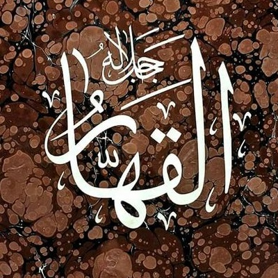
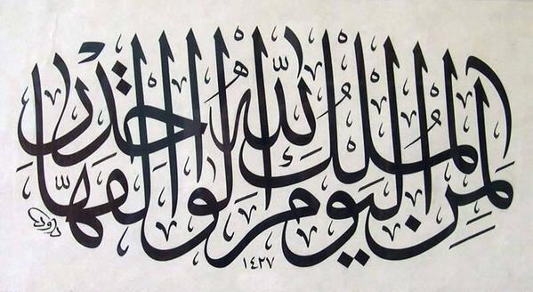

Birbiriyle çok ilgili görünmeyen, fakat 6 âyetin sonunda birlikte geçen iki isim: İlk kelime Vâhid, sayı olarak "bir" anlamında ve 61 âyette geçiyor.
Bu sayı en çok "Bir Tanrı" ve "Bir ümmet" ifadelerinde kullanılmış. Her ikisinde de "tek" anlamını taşıyor.
Diğer kelime el-Kahhâr ise daima belirli halde ve el-Vâhid ile birlikte geçiyor. 
Altı ayette el-vâhidul-kahhâr şeklinde yan yana: 
limenil-mulkul-yevm, lillâhil-vâhidil-qahhâr
Bugün mülk kimin? Bir olan ve Kahreden Allah'ın
Söz konusu gün, elbette Kıyamet günü, yer de Haşr meydanı. Saklanacak, korunacak hiçbir engeli olmayan dümdüz meydan. Herkes ortaya çıkmış, bâriz, apaçık. Ameller ortaya dökülmüş, bazısı boyunlarda asılı yük, bazısı ellerde ışık. Dünyada iken gizlenebildiğini sandığımız herşey bâriz, apaçık, ortada.
O gün, gizlilik kalmadığının da görüleceği gün. Dehşet veren soru orada, o gün soruluyor. Muhatab bütün halk. Soran ise el-Vâhid. Cemal tecellileri o gün ortada yok, sadece Celal görünüyor. Kahreden sıfatlar.
Hz Yusuf'un zindandaki dersi de aynı günü hatırlatıyor:
(12:39)
eerbâbun muteferriqûne hayrun
Ayrı ayrı bir sürü rabler mi daha iyi,
emillâhul-vâhidul-qahhâr
yoksa Bir olan ve Kahreden Allah mı?